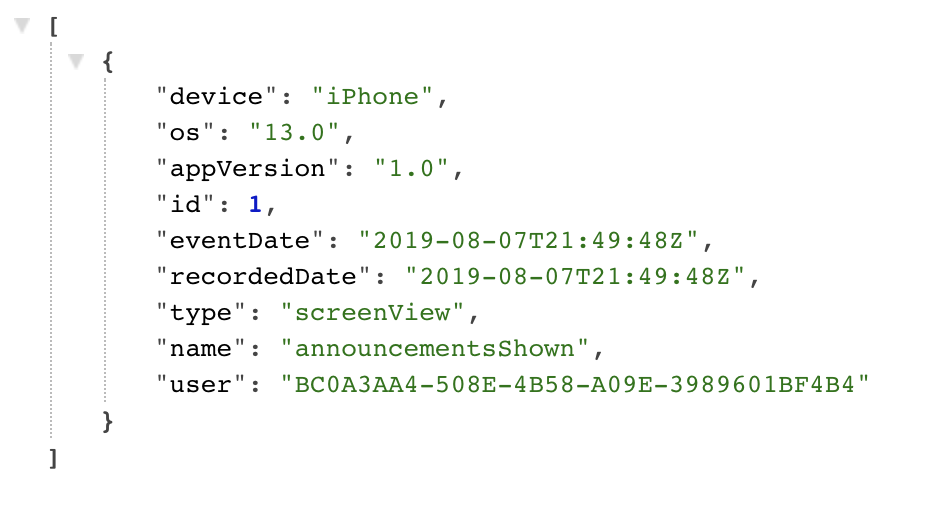
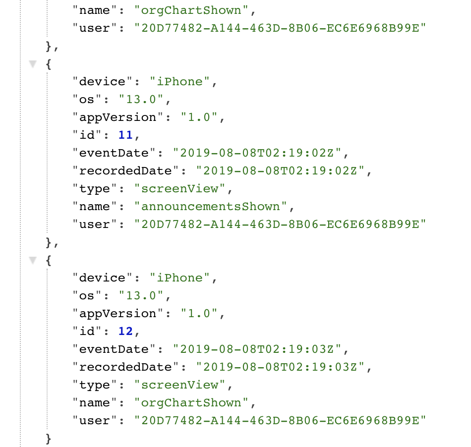

15: 给现有的类添加功能¶
你并不总是有时间，或者根本不可行，去打破一个非常大的类的依赖关系。如果你有一个添加新功能的最后期限，而你的应用程序是一碗意大利面条，你不会有时间先把它理顺。幸运的是，有一些TDD技术可以解决这种情况。
在本章中，你将学习为现有的类添加功能的策略，同时避免修改它 为了做到这一点，你将会学习一些策略，比如萌芽和依赖性注入。
为了证明这些想法，你将在MyBiz应用程序的主视图控制器中添加一些基本的分析功能。毕竟，每个企业都想知道他们的用户在做什么。
开始工作¶
使用本章中的后端项目和启动项目，因为它们在上一章的基础上有一些修改，你会需要这些修改。启动后端。像往常一样，如果你需要帮助来运行它，请参考第11章"遗留问题"。
你的目标是为五个主要的视图控制器中的每一个添加一个屏幕来查看分析事件：Announcements, Calendar, Org Chart, Purchase Orders和Seetings。这样一来，产品所有者就能识别出最常用的屏幕，以弄清在哪里投入时间和资源。
报告一个分析事件涉及：
- 一个由用户发起的行动，如屏幕浏览或按钮点击。
- 一份包含事件元数据的报告。
- 将该报告发送到后端。
发送报告¶
在这种情况下，从底部开始是最容易的。增加向后端发送报告的能力。你已经有一个与后端进行通信的类，即API。你将为这个类创建一个扩展，以处理新的功能，同时避免臃肿的当前文件。
打好基础¶
首先，把你在前一章学到的东西，从一个协议开始，以保持依赖关系的干净，使工作更容易测试。
在MyBiz组下的启动项目中创建一个名为Analytics的新组。你将用它来组织所有与分析有关的代码，并将使项目更容易浏览。它从一开始就应该组织得更好，但你并不总是能选择你的起始项目。把Report.swift移到这个组。这个文件保存着Report，它代表了一个单独的分析事件，要发回给服务器。
接下来，在该组中，创建一个名为AnalyticsAPI.swift的新Swift文件。你将用它来定义一个协议，使分析工作与其他后端功能分开。
用以下占位符代码替换AnalyticsAPI.swift的内容：
protocol AnalyticsAPI {
}
每当你添加新的代码，你应该先添加测试。在MyBizTests/Cases组中，创建一个新的单元测试案例类，命名为AnalyticsAPITests，并将其添加到MyBizTests目标中。
将文件的内容替换为以下内容：
import XCTest
@testable import MyBiz
class AnalyticsAPITests: XCTestCase {
var sut: AnalyticsAPI!
override func setUpWithError() throws {
try super.setUpWithError()
}
override func tearDownWithError() throws {
try super.tearDownWithError()
}
func testAPI_whenReportSent_thenReportIsSent() {
// given
let date = Date()
let interval: TimeInterval = 20.0
let report = Report(
name: "name",
recordedDate: date,
type: "type",
duration: interval,
device: "device",
os: "os",
appVersion: "appVersion")
// when send a report?
// ???
// then assert a report was sent
// ???
}
}
testAPI_whenReportSent_thenReportIsSent()假设AnalyticsAPI可以发送一个报告，然后你就可以验证它是否被发送。唯一的问题是怎么做？在应用程序中没有很好的扩展点可以轻松做到这一点。
扩展API¶
第一步是发送报告。你已经有一个向后端发送东西的类了：API。正如你在以前的章节中所看到的，这个类很麻烦，而且与应用程序的其他代码交织在一起。理想情况下，你想在不增加其复杂性或引入新的依赖性的情况下为其添加新的功能。
值得庆幸的是，Swift允许你通过使用扩展来分割各文件的实现。使用扩展，你可以为分析的API添加新的功能，而不需要对现有的混乱局面进行必要的干扰。
在Analytics组中创建一个新文件：API+Analytics.swift。这个命名惯例让你知道，该文件将包含一个与分析有关的API的扩展。
接下来，将以下扩展名添加到文件中：
extension API: AnalyticsAPI {
}
现在你有一个具体的AnalyticsAPI，你可以在你的测试中使用。
回到AnalyticsAPITests.swift，将sut、setUpWithError和tearDownWithError替换为以下内容：
var sut: AnalyticsAPI { return sutImplementation }
var sutImplementation: API!
override func setUpWithError() throws {
try super.setUpWithError()
sutImplementation = API(server: "test")
}
override func tearDownWithError() throws {
sutImplementation = nil
try super.tearDownWithError()
}
这创建了一个存储在sutImplementation中的特定API实例，但只通过变量sut将其作为AnalyticsAPI公开。这样，你就可以确定你只测试AnalyticsAPI的方法，而不是任何可能与API一起出现的其他逻辑。
发送一个报告¶
现在你可以开始考虑那个报告了。
打开AnalyticsAPI.swift在协议中添加以下方法：
func sendReport(report: Report)
接下来，打开API+Analytics.swift，在扩展中添加以下实现：
func sendReport(report: Report) {
}
现在，你有一个发送报告的方法，你可以在测试中使用。
打开AnalyticsAPITests.swift，找到testAPI_whenReportSent_thenReportIsSent，用以下内容替换when部分：
// when
sut.sendReport(report: report)
困难的部分是想出如何测试报告是否被发送。这是一个单元测试，所以你不想依靠一个实时的后端来验证应用程序的逻辑。除此之外，API的测试实例甚至没有一个有效的URL可以调用！你真正需要的是一个mock对象。
你真正需要的是一个mock对象，它代表后端，但也使用真正的API实现。如果你只是模拟AnalyticsAPI，那么测试将只验证，当你调用一个对象方法时，该方法会执行。所以你需要真正的API。
为了解决这个问题，另一个协议和注入就来了! 打开API.swift，在文件中添加以下协议：
protocol RequestSender {
func send<T: Decodable>(
request: URLRequest,
success: ((T) -> Void)?,
failure: ((Error) -> Void)?
)
}
这个方法接受一个URLRequest，发送它并在一个或另一个完成块中报告成功或失败。
API已经有一个方法基本上可以做到这一点，所以它将很容易实现。
在文件的底部添加以下扩展：
extension API: RequestSender {
func send<T>(
request: URLRequest,
success: ((T) -> Void)?,
failure: ((Error) -> Void)?
) where T: Decodable {
let task = loadTask(
request: request,
success: success,
failure: failure)
task.resume()
}
}
这重用了loadTask(request:success:failure:)来制作一个URLSessionTask并转发成功和失败块。该方法还启动了任务，因为它没有返回值，也没有其他方法来执行任务。
最后，在API的var token下面添加以下var：
lazy var sender: RequestSender = self
这设置了一个请求发送者，以后可以注入，但使用自己作为默认。这将是在下一步为API添加测试的一个杠杆点。像这样的自我引用似乎有点间接。然而，采取这一步可以让你在其他方面不触动这个类，仍然可以为它添加新的功能，包括测试。
测试API¶
在MyBizTests目标中，创建一个新的组：Mocks。在该组中，创建一个新的文件，MockSender.swift，并将其内容改为以下内容。
import XCTest
@testable import MyBiz
class MockSender: RequestSender {
var lastSent: Decodable?
func send<T: Decodable>(
request: URLRequest,
success: ((T) -> Void)?,
failure: ((Error) -> Void)?
){
let decoder = JSONDecoder()
decoder.dateDecodingStrategy = .iso8601
do {
let obj = try decoder.decode(
T.self,
from: request.httpBody!)
lastSent = obj
success?(obj)
} catch {
print("error decoding a \(T.self): \(error)")
failure?(error)
}
}
}
这个类实现了RequestSender协议，它返回你用来创建请求体的对象，然后将其存储在lastSent中。从这里你可以做很多事情，但这已经足够完成测试了。
回到AnalyticsAPITests.swift中，为mock添加一个变量：
var mockSender: MockSender!
接下来，在setUpWithError的末尾添加以下内容：
mockSender = MockSender()
sutImplementation.sender = mockSender
接下来，在tearDownWithError中添加以下内容，就在对super的调用之前：
mockSender = nil
最后将testAPI_whenReportSent_thenReportIsSent的then部分改为以下内容：
// then
XCTAssertNotNil(mockSender.lastSent)
XCTAssertEqual(report.name, "name")
XCTAssertEqual((mockSender.lastSent as? Report)?.name, "name")
记住，MockSender在lastSent中存储了已发送的对象，所以你能够用它来验证传入的Report是否被发送。建立并运行测试，你会看到它仍然失败。你仍然需要提供sendReport(report:)的实现。
Sprouting发送方法¶
API已经有一个方法可以接收一个对象并将其发送到后端：submitPO(po:)。太糟糕了，这是专门用来发送采购订单的。你可以通过映射它的依赖关系来重构这个方法，编写特性化和单元测试，并以可重用的方式扩展API功能。
但是，你现在没有时间进行这么多的重构。在这种情况下，你要做一件你的老师告诉你永远不要做的事情。复制代码。这没关系。你要对这个复制的方法进行测试，这项工作只是为了在你增加分析的时候支持你。在你得到这个工作之后，你会回去完成重构。
打开API+Analytics.swift，在文件末尾添加以下API扩展：
extension API {
// 1
func logAnalytics(analytics: Report,
completion: @escaping (Result<Report, Error>) -> Void
) throws { // 2
let url = URL(string: server + "api/analytics")!
var request = URLRequest(url: url)
if let token = token?.token {
let bearer = "Bearer \(token)"
request.addValue(
bearer,
forHTTPHeaderField: "Authorization")
}
request.addValue(
"application/json",
forHTTPHeaderField: "Content-Type")
request.httpMethod = "POST"
let coder = JSONEncoder()
coder.dateEncodingStrategy = .iso8601
let data = try coder.encode(analytics)
request.httpBody = data
// 3
sender.send(
request: request,
success: { savedEvent in
completion(.success(savedEvent))
},
failure: { error in
completion(.failure(error))
})
}
}
这段代码复制了submitPO(po:)的代码，有几个明显的变化：
logAnalytics(analytics:completion:)接收一个分析报告，而不是一个PurchaseOrder。另外，重要的是，它有一个返回结果的completion闭包，而不是依赖原始应用代码中的难以理解的、可能有问题的委托。如果你能在改进或添加代码时推出新的语言特性和现代模式，利用这些特性和模式是一个好主意。- 没有硬编码的采购订单的端点，而是有一个硬编码的分析端点。
- 这使用了新的
RequestSender.send(request:success:failure:)，你在前面介绍的API。这意味着你将能够测试这个方法!
在这里，你使用了一种叫做sprouting方法的技术，也就是在现有的类中添加一个新的方法，以增强或重复现有的功能，这样你就可以添加一个新的功能。这种技术可以让你避免在重构类的过程中走弯路，或者可能破坏尚未测试的东西。它允许你定义一个新的接口，与代码的遗留部分干净地分开。在这种情况下，该接口甚至被定义在一个单独的文件中。
为了完成这项任务，通过在扩展中的sendReport(report:)中添加以下内容将logAnalytics连接到AnalyticsAPI：
try? logAnalytics(analytics: report) { _ in }
你调用logAnalytics(analytics:completion:)，传递报告和一个空白的completion闭包，没有错误处理。
现在，构建和测试，测试将通过。你已经成功地为API添加了一个新的（而且是可测试的！）方法，而对现有代码库的侵入却很小。
在视图控制器中添加分析功能¶
艰苦的工作已经结束了，剩下的应该很容易，对吗？如果你回想一下分析的步骤列表，你仍然需要实现这一部分：
- 一个由用户发起的动作，比如屏幕浏览或按钮点击。
你将从最左边的视图控制器开始：AnnouncementsTableViewController。首先，在MyBizTests/Cases中创建一个新的单元测试案例类，命名为AnnouncementsTableViewControllerTests.swift。
最后，将该文件的内容替换为以下内容：
import XCTest
@testable import MyBiz
class AnnouncementsTableViewControllerTests: XCTestCase {
var sut: AnnouncementsTableViewController!
override func setUpWithError() throws {
try super.setUpWithError()
sut = UIStoryboard(name: "Main", bundle: nil)
.instantiateViewController(withIdentifier:
"announcements")
as? AnnouncementsTableViewController
}
override func tearDownWithError() throws {
sut = nil
super.tearDown()
}
func whenShown() {
sut.viewWillAppear(false)
}
func testController_whenShown_sendsAnalytics() {
// when
whenShown()
// then the report will be sent
// ???
}
}
这设置了一个测试，被测试的系统是一个AnnouncementsTableViewControllerTests。testController_whenShown_sendsAnalytics的目的是测试viewWillAppear(_:)是否会导致分析报告的发送。 whenShown触发了这个步骤。下一步是弄清楚如何验证这一点。
不mock所有的API¶
你已经设置了一个协议来帮助测试：AnalyticsAPI。你根本不需要使用API或模拟出RequestSender。
在Mocks组中，创建一个名为MockAnalyticsAPI.swift的新Swift文件，并将其内容替换为以下内容：
import XCTest
@testable import MyBiz
class MockAnalyticsAPI: AnalyticsAPI {
var reportSent = false
func sendReport(report: Report) {
reportSent = true
}
}
这个类实现了AnalyticsAPI，但它没有发送报告，而是使用reportSent来标记它触发了。你之前对API的测试确保了报告会被发送到服务器上。
回到AnnouncementsTableViewControllerTests.swift中，给这个类添加一个新的var：
var mockAnalytics: MockAnalyticsAPI!
接下来，在setUpWithError的末尾添加以下内容：
mockAnalytics = MockAnalyticsAPI()
sut.analytics = mockAnalytics
这将创建新的模拟，并将其设置在sut上。
接下来，在tearDownWithError中添加以下内容：
mockAnalytics = nil
接下来，在testController_whenShown_sendsAnalytics中，在then条件中加入以下内容：
XCTAssertTrue(mockAnalytics.reportSent)
回顾一下，MockAnalyticsAPI在初始化时将reportSent设置为false，而成功的sendReport(report:)应该将其设置为true。这使得测试可以验证报告是否会被发送。
最后，为了让测试建立并通过，你需要把viewWillAppear(_:)连接到分析API上。在AnnouncementsTableViewController.swift中添加以下内容var announcements：
var analytics: AnalyticsAPI?
最后，在viewWillAppear(_:)的末尾添加以下内容：
let screenReport = Report(name: AnalyticsEvent.announcementsShown.rawValue,
recordedDate: Date(),
type: AnalyticsType.screenView.rawValue,
duration: nil,
device: UIDevice.current.model,
os: UIDevice.current.systemVersion,
appVersion: Bundle.main.object(
forInfoDictionaryKey: "CFBundleShortVersionString") as! String)
analytics?.sendReport(report: screenReport)
这将创建一个报告，其中包含一些关于应用程序、设备和特定事件的有用信息。然后，你把它交给AnalyticsAPI，它把它发送到后端。
构建和测试；你就回到了绿色。
另一个有趣的用例¶
为了实现前面的测试，你设置了一个完整的AnalyticsAPI的模拟实例。你可以用它来进行测试，而不必担心之前作为API子类的MockAPI所带来的混乱。通过使用这个协议并从一个模拟实现开始，你将默认确保你添加到应用中的任何新方法都是可测试的。
你可以用mock做的另一件事是验证一个方法被调用的次数或方法被调用的顺序。
打开MockAnalyticsAPI.swift，并在下面添加以下内容var reportSent:
var reportCount = 0
接下来，在sendReport(report:)的末尾添加以下内容：
reportCount += 1
现在，每次你调用sendReport(report:)时，reportCount就会递增。
接下来，在AnnouncementsTableViewControllerTests.swift的末尾添加以下测试：
func testController_whenShownTwice_sendsTwoReports() {
// when
whenShown()
whenShown()
// then
XCTAssertEqual(mockAnalytics.reportCount, 2)
}
这将测试每次屏幕显示时，它将发送一份报告。构建和测试，你应该都是绿色的。
传递依赖性¶
Analytics功能现在可以在测试中工作了，但在你运行应用程序时却不能。这是因为你仍然需要将AnalyticsAPI传递给AnouncementsTableViewController。
当使用storyboard时，你想在prepare(for:sender:) segue方法中这样做，将你需要的任何依赖注入到下一个视图控制器中（或者类似地，在视图模型或其他辅助工具中）。这个应用使用了一个普通的UITabBarController，它被手动添加到屏幕上。没有prepare(for:sender:)方法可以重写。
因此，你也必须手动设置分析。你知道你有可能会把它添加到许多视图控制器中。想一想如何在影响最小的情况下将其添加到现有的类中是有意义的。这意味着协议再一次拯救了你。
打开AnalyticsAPI.swift，在文件的末尾添加以下协议：
protocol ReportSending: AnyObject {
var analytics: AnalyticsAPI? { get set }
}
通过在任何类中添加一个var并遵守这个协议，你就可以注入AnalyticsAPI的实现。
打开AnnouncementsTableViewController.swift，在文件的末尾添加以下扩展：
extension AnnouncementsTableViewController: ReportSending {}
就这样，你可以为AnnouncementsTableViewController提供一个分析对象，而不需要暴露任何关于自身的额外信息。
打开AppDelegate.swift，用以下内容替换handleLogin(userId:)：
func handleLogin(userId: String) {
self.userId = userId
let storyboard = UIStoryboard(name: "Main", bundle: nil)
let tabController = storyboard
.instantiateViewController(withIdentifier: "tabController")
as! UITabBarController
tabController.viewControllers?
.compactMap { $0 as? ReportSending }
.forEach { $0.analytics = api }
rootController = tabController
}
现在，这为所有坚持ReportSending的标签栏的视图控制器添加了AnalyticsAPI。因为这包括NouncementsTableViewController，所以现在只要它的viewWillAppear(_:)触发，你就会看到日志记录。
构建并运行该应用程序。登录后，AnnouncementsTableViewController标签将显示。在浏览器中打开http://localhost:8080/api/analytics，你会看到与下面类似的记录事件：

添加更多事件¶
所以你现在有一个屏幕在发送报告。将报告添加到其他屏幕应该是很简单的。例如，在OrgTableViewController.swift中添加以下var：
var analytics: AnalyticsAPI?
最后，在文件的末尾添加以下扩展名：
extension OrgTableViewController: ReportSending {}
要在这个控制器上实现ReportSending，首先要做一个测试。创建一个新的单元测试案例类，名为OrgTableViewControllerTests.swift。打开MyBizTests/Cases，用下面的内容替换：
import XCTest
@testable import MyBiz
class OrgTableViewControllerTests: XCTestCase {
var sut: OrgTableViewController!
var mockAnalytics: MockAnalyticsAPI!
override func setUp() {
super.setUp()
sut = UIStoryboard(name: "Main", bundle: nil)
.instantiateViewController(withIdentifier: "org")
as? OrgTableViewController
mockAnalytics = MockAnalyticsAPI()
sut.analytics = mockAnalytics
}
override func tearDown() {
sut = nil
mockAnalytics = nil
super.tearDown()
}
func whenShown() {
sut.viewWillAppear(false)
}
func testController_whenShown_sendsAnalytics() {
// when
whenShown()
// then
XCTAssertTrue(mockAnalytics.reportSent)
}
}
TestController_whenShown_sendsAnalytics测试当OrgTableViewController显示时，是否会发送报告，这一点应该很熟悉，因为它与NouncementsTableViewControllerTests非常相似。
为了让测试通过，OrgTableViewController将需要在其视图显示时发送报告。但是，在修改viewWillAppear(_:)之前，最好先创建一个辅助方法，这样你就不用复制模板了。
打开Report.swift，在Report.swift中添加以下方法：
static func make(event: AnalyticsEvent,
type: AnalyticsType) -> Report {
Report(
name: event.rawValue,
recordedDate: Date(),
type: type.rawValue,
duration: nil,
device: UIDevice.current.model,
os: UIDevice.current.systemVersion,
appVersion: Bundle.main.object(
forInfoDictionaryKey: "CFBundleShortVersionString")
as! String)
}
这个工厂方法处理了所有进入报告的常量，所以调用者只需要担心每个屏幕上的具体细节。在这一点上，你应该对TDD有足够的了解，可以自己写一个测试（如果你想得到提示，请查看最终项目中的ReportTests.swift)。
现在你可以在OrgTableViewController.swift中使用这个方法。在viewWillAppear(_:)的末尾添加以下内容：
let report = Report.make(event: .orgChartShown,
type: .screenView)
analytics?.sendReport(report: report)
现在，测试将通过。构建并运行，你应该看到在你改变标签时记录了两个不同的屏幕事件。

恭喜你，你已经成功地在一个相当复杂的应用程序中添加了一个新功能。你只对现有的代码做了最小的改动，而且你还一路写了测试。
挑战¶
有几项任务还没有完成，你应该处理一下。
- 清理
AnnouncementsTableViewController，以使用Report.make方法。 - 为其他屏幕添加
screenView分析功能。作为提示，你必须通过UINavigationControllers来转发AnalyticsAPI。
关键点¶
- 你不必为了增加新的功能而将整个类置于测试之下。
- 你可以萌发一个方法来扩展功能，即使它增加了一点冗余。
- 使用协议来注入依赖性和扩展，将新代码与遗留代码分开。
TDD方法将为清洁和测试的功能指引方向。
从这里开始要去哪里？¶
虽然你已经走了很长一段路，但你只是触及了进行修改和改进代码的表面。你可以继续将API分解成特定的协议，如AnalyticsAPI和LoginAPI。你现在也可以通过用Results代替delegates和使用RequestSender使代码更容易测试来逐步改进API。
你也可以将RequestSender重塑为自己的对象，传递到包含服务器细节的API中。然后你可以在现有的测试中替换MockAPI，这样你就可以写出更好更全面的单元测试。这就完全消除了特性化测试与实时服务器联系的需要。你的工作永远不会完成。
这种方法也有一些弊端。许多小协议引入的间接性会使代码更难调试，这就是为什么拥有全面的测试是至关重要的。当萌发方法时，它可能很诱人，永远不会回去重新审视你的旧代码，让应用程序处于一种可能让新人感到困惑的状态。这也意味着遗留代码永远不会改进。
这就是遗留代码教程的结束。请查看《设计模式》教程，了解更多重组和隔离代码的技术。